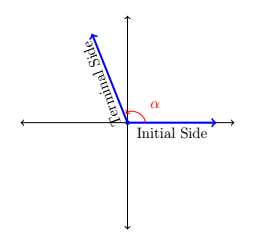
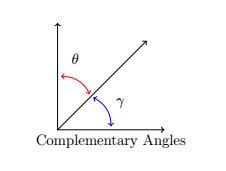
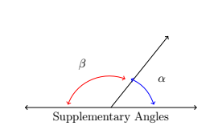
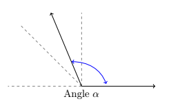
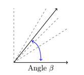
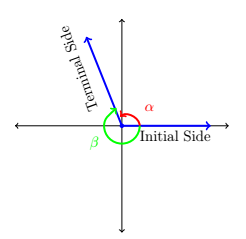
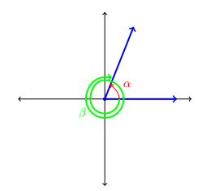
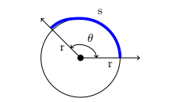

In geometry class you learn about angles and the basics of trigonometry. In this chapter we are going to explore more on the concepts of trigonometry. The Greek word trigonometry means "measurement of triangles". Thus it should come as no surprise that, throughout this chapter and the next several chapters we going going to learn a lot of information regarding angles and their measurements, and more specifically where we can use this information in the real world.
When an angle is put into standard position, that means that the initial side of the angle is along the x-axis and the angle is measure from that side to the terminal side. Each of these sides of an angle are known as rays that meet at something called a vertex as can be seen in the images below.

When this angle is measure counter-clockwise α is a positive angle. When the angle is measured clockwise α is a negative angle.
By definition of degree measure, we have that 1° represents the measure of an angle which constitutes 1/360 of a revolution. Even though it may be hard to draw, it is nonetheless not difficult to imagine an angle with measure smaller than 1°. There are two ways to subdivide degrees. The first, and most familiar, is decimal degrees. For example, an angle with a measure of 30.5° would represent a rotation halfway between 30° and 31°, or equivalently, 30.5/360 = 61/720 of a full rotation. This can be taken to the limit using Calculus so that measures like √2° make sense.
The second way to divide degrees is the Degree-Minute-Second (DMS) system. In this system, one degree is divided equally into sixty minutes, and in turn, each minute is divided equally into sixty seconds. In symbols, we write 1° = 60' and 1' = 60'', from which it follows that 1° = 3600''. To convert a measure of 42.125° to the DMS system, we start by noting that 42.125° = 42° + 0.125°. Converting the partial amount of degrees to minutes, we find 0.125° × (60'/1°) = 7.5' = 7' + 0.5'. Converting the partial amount of minutes to seconds gives 0.5' × (60''/1') = 30''. Putting it all together yields
On the other hand, to convert 117°15'45'' to decimal degrees, we first compute 15' × (1°/60') = 1/4° and 45'' × (1°/3600'') = 1/80°. Then we find
Recall that two acute angles are called complementary angles if their measures add to 90°. Two angles, either a pair of right angles or one acute angle and one obtuse angle, are called supplementary angles if their measures add to 180°. In the diagram below, the angles α and β are supplementary angles while the pair γ and θ are complementary angles.


In practice, the distinction between the angle itself and its measure is blurred so that the sentence 'α is an angle measuring 42°' is often abbreviated as 'α = 42°.' It is now time for an example.
Let α = 111.371° and β = 37°28'17''.
To convert α to the DMS system, we start with 111.371° = 111° + 0.371°. Next we convert 0.371° × (60'/1°) = 22.26'. Writing 22.26' = 22' + 0.26', we convert 0.26' × (60''/1') = 15.6''. Hence,
Rounding to seconds, we obtain α ≈ 111°22'16''.
To convert β to decimal degrees, we convert 28' × (1°/60') = 7/15° and 17'' × (1°/3600') = 17/3600°. Putting it all together, we have
To sketch α, we first note that 90° < α < 180°. If we divide this range in half, we get 90° < α < 135°, and once more, we have 90° < α < 112.5°. This gives us a pretty good estimate for α, as shown below. Proceeding similarly for β, we find 0° < β < 90°, then 0° < β < 45°, 22.5° < β < 45°, and lastly, 33.75° < β < 45°.


To find a supplementary angle for α, we seek an angle θ so that α + θ = 180°. We get θ = 180° - α = 180° - 111.371° = 68.629°.
To find a complementary angle for β, we seek an angle γ so that β + γ = 90°. We get γ = 90° - β = 90° - 37°28'17''. While we could reach for the calculator to obtain an approximate answer, we choose instead to do a bit of sexagesimal arithmetic. We first rewrite 90° = 90°0'0'' = 89°60'0'' = 89°59'60''. In essence, we are 'borrowing' 1° = 60' from the degree place, and then borrowing 1' = 60'' from the minutes place. This yields, γ = 90° - 37°28'17'' = 89°59'60'' - 37°28'17'' = 52°31'43''.
When two angles α and β share both an initial side and a terminal side of an angle they are known as coterminal angles. As can be seen in the examples below.


More precisely, if α and β are coterminal angles, then β = α + 360° × k where k is any integer value.
Find three coterminal angles with at least one of them being negative.
First we can find the negative coterminal angle by taking 60° and subtracting 360° to find:
β = 60° - 360° = -300°
To find another positive coterminal angle we can simply just add 360° to our angle to get
β = 60° + 360° × 1 = 420°
Which is just our angle plus one full rotation, we can find another positive angle by making two full rotations
β = 60° + 360° × 2 = 780°
Since this one is already negative we can find the positive version of this angle by adding it to 360°, thus we'd find that
β = -45° + 360° = 315°
To find a second negative coterminal angle we would do similarly to what was done above
β = -45° - 360° × 1 = -395°
We can do that once more to get another rotation
β = -45° - 360° × 2 = -765°
For our last one, we could just keep making rotations around by adding multiples of 360° but those numbers will add up quickly, instead note how 451° > 360° that means this angle is already a multiple of 360°, in this case we can go backwards a few rotations to find a positive coterminal angle and a negative coterminal angle
β = 451° + 360° × -1 = 91°
β = 451° + 360° × -2 = -269°
β = 451° + 360° × -3 = -629°
All we did in this example is go around the angle clockwise multiple times to keep getting to a new coterminal angle.
Degrees are not the only method for which you can measure an angle. Another type of measurement that we will use in this course is radians.
A radian can be defined as the measure of an angle θ that is created from the initial side of an angle to the terminal side of an angle that intercepts an arc s that is equal in length to the radius of the circle.
θ = s/r

To get a better feel for radian measure, we note that an angle with radian measure 1 means the corresponding arc length s equals the radius of the circle r, hence s = r. When the radian measure is 2, we have s = 2r; when the radian measure is 3, s = 3r, and so forth. Thus the radian measure of an angle θ tells us how many 'radius lengths' we need to sweep out along the circle to subtend the angle θ.
Since one revolution sweeps out the entire circumference 2πr, one revolution has radian measure (2πr)/r = 2π. From this we can find the radian measure of other central angles using proportions, just like we did with degrees. For instance, half of a revolution has radian measure (1/2)(2π) = π, a quarter revolution has radian measure (1/4)(2π) = π/2, and so forth. Note that, by definition, the radian measure of an angle is a length divided by another length so that these measurements are actually dimensionless and are considered 'pure' numbers. For this reason, we do not use any symbols to denote radian measure, but we use the word 'radians' to denote these dimensionless units as needed. For instance, we say one revolution measures '2π radians,' half of a revolution measures 'π radians,' and so forth.
As with degree measure, the distinction between the angle itself and its measure is often blurred in practice, so when we write 'θ = π/2', we mean θ is an angle which measures π/2 radians. We extend radian measure to oriented angles, just as we did with degrees beforehand, so that a positive measure indicates counter-clockwise rotation and a negative measure indicates clockwise rotation. Much like before, two positive angles α and β are supplementary if α + β = π and complementary if α + β = π/2. Finally, we leave it to the reader to show that when using radian measure, two angles α and β are coterminal if and only if β = α + 2πk for some integer k.
Graph each of the (oriented) angles below in standard position and classify them according to where their terminal side lies. Find three coterminal angles, at least one of which is positive and one of which is negative.
The angle α = π/6 is positive, so we draw an angle with its initial side on the positive x-axis and rotate counter-clockwise (π/6)/(2π) = 1/12 of a revolution. Thus α is a Quadrant I angle. Coterminal angles θ are of the form θ = α + 2π · k, for some integer k. To make the arithmetic a bit easier, we note that 2π = 12π/6, thus when k = 1, we get θ = π/6 + 12π/6 = 13π/6. Substituting k = -1 gives θ = π/6 - 12π/6 = -11π/6 and when we let k = 2, we get θ = π/6 + 24π/6 = 25π/6.
Since β = -4π/3 is negative, we start at the positive x-axis and rotate clockwise (4π/3)/(2π) = 2/3 of a revolution. We find β to be a Quadrant II angle. To find coterminal angles, we proceed as before using 2π = 6π/3, and compute θ = -4π/3 + 6π/3 · k for integer values of k. We obtain 2π/3, -10π/3 and 8π/3 as coterminal angles.
Since γ = 9π/4 is positive, we rotate counter-clockwise from the positive x-axis. One full revolution accounts for 2π = 8π/4 of the radian measure with π/4 or 1/8 of a revolution remaining. We have γ as a Quadrant I angle. All angles coterminal with γ are of the form θ = 9π/4 + 8π/4 · k, where k is an integer. Working through the arithmetic, we find: π/4, -7π/4 and 17π/4.
To graph φ = -5π/2, we begin our rotation clockwise from the positive x-axis. As 2π = 4π/2, after one full revolution clockwise, we have π/2 or 1/4 of a revolution remaining. Since the terminal side of φ lies on the negative y-axis, φ is a quadrantal angle. To find coterminal angles, we compute θ = -5π/2 + 4π/2 · k for a few integers k and obtain -π/2, 3π/2 and 7π/2.
It is worth mentioning that we could have plotted the angles in the above examples by first converting them to degree measure and following the procedure set forth by using coterminal angles. While converting back and forth from degrees and radians is certainly a good skill to have, it is best that you learn to 'think in radians' as well as you can 'think in degrees'.
Since one revolution counter-clockwise measures 360° and the same angle measures 2π radians, we can use the proportion (2π radians)/(360°), or its reduced equivalent, (π radians)/(180°), as the conversion factor between the two systems. For example, to convert 60° to radians we find 60° × (π radians/180°) = π/3 radians, or simply π/3. To convert from radian measure back to degrees, we multiply by the ratio (180°)/(π radian). For example, -5π/6 radians is equal to (-5π/6 radians) × (180°/π radians) = -150°.
| Degree → Radian | Radian → Degree |
|---|---|
|
Multiply by: π/180° |
Multiply by: 180°/π |
Important: Treat π like a variable. Do not compute it.
Convert the following from Degree measure to Radian measure. Then plot them in standard form.
To convert 135° into Radian we need to multiply by our conversion factor of π/180°. Remember you want to treat π as if it was a variable, and don't actual compute the value right now. It is important to note that the degree symbol reduces itself out, since we have a degree in both the numerator and denominator.
135° · π/180° = (135°π)/(180°) = 3π/4 radians
If you look at the graph notice how the denominator of the radian is the number of sections that it breaks the top section of the graph into. This is because 180° = π try to think of it as a pizza. We want to have 3 of those four slices that it just split that area into. If we moved just one "slice" we'd end up on that dotted line in quadrant I, and if we wanted two "slices" we'd have the terminal side of our angle on the y-axis. Hence when we move to that third "slice" we end up in the second quadrant.
To convert 60° we take the same approach
60° · π/180° = (60°π)/(180°) = π/3 radians
Notice how in this one, we "cut" π into three equal pieces, and then since the numerator was one, we put the terminal side of the angle at that first marker.
Lastly to convert -320°
-320° · π/180° = (-320°π)/(180°) = -16π/9 radians
For this one, we needed 9 divisions of π both positive and negative giving us 18 divisions total, and we needed to move clockwise since it was negative 16 of those divisions, which actually would be the same as 2π/9.
Convert the following radian measure into degrees.
To convert a radian into a degree we flip our conversion factor over to multiply by 180°/π
π/5 · 180°/π = (180°π)/(5π) = 180°/5 = 36°
Once again multiply by the conversion factor.
5π/3 · 180°/π = (180° · 5π)/(3π) = 900°/3 = 300°
Now that we have paired angles with real numbers via radian measure, a whole world of applications awaits us. Our first excursion into this realm comes by way of circular motion. Suppose an object is moving as pictured below along a circular path of radius r from the point P to the point Q in an amount of time t.
Here s represents a displacement so that s > 0 means the object is traveling in a counter-clockwise direction and s < 0 indicates movement in a clockwise direction. Note that with this convention the formula we used to define radian measure, namely θ = s/r, still holds since a negative value of s incurred from a clockwise displacement matches the negative we assign to θ for a clockwise rotation.
In Physics, the average velocity of the object, denoted v̄ and read as 'v-bar', is defined as the average rate of change of the position of the object with respect to time. As a result, we have v̄ = displacement/time = s/t. The quantity v̄ has units of length/time and conveys two ideas: the direction in which the object is moving and how fast the position of the object is changing. The contribution of direction in the quantity v̄ is either to make it positive (in the case of counter-clockwise motion) or negative (in the case of clockwise motion), so that the quantity |v̄| quantifies how fast the object is moving - it is the speed of the object. Measuring θ in radians we have θ = s/r thus s = rθ and
v̄ = s/t = rθ/t = r · θ/t
The quantity θ/t is called the average angular velocity of the object. It is denoted by ω̄ and is read 'omega-bar'. The quantity ω̄ is the average rate of change of the angle θ with respect to time and thus has units radians/time. If ω̄ is constant throughout the duration of the motion, then it can be shown that the average velocities involved, namely v̄ and ω̄, are the same as their instantaneous counterparts, v and ω, respectively. In this case, v is simply called the 'velocity' of the object and is the instantaneous rate of change of the position of the object with respect to time. Similarly, ω is called the 'angular velocity' and is the instantaneous rate of change of the angle with respect to time.
If the path of the object were 'uncurled' from a circle to form a line segment, then the velocity of the object on that line segment would be the same as the velocity on the circle. For this reason, the quantity v is often called the linear velocity of the object in order to distinguish it from the angular velocity, ω. Putting together the ideas of the previous paragraph, we get the following.
For an object moving on a circular path of radius r with constant angular velocity ω, the (linear) velocity of the object is given by v = rω.
We need to talk about units here. The units of v are length/time, the units of r are length only, and the units of ω are radians/time. Thus the left hand side of the equation v = rω has units length/time, whereas the right hand side has units length · radians/time = length · radians/time. The supposed contradiction in units is resolved by remembering that radians are a dimensionless quantity and angles in radian measure are identified with real numbers so that the units length · radians/time reduce to the units length/time. We are long overdue for an example.
Assuming that the surface of the Earth is a sphere, any point on the Earth can be thought of as an object traveling on a circle which completes one revolution in (approximately) 24 hours. The path traced out by the point during this 24 hour period is the Latitude of that point. Lakeland Community College is at 41.628° north latitude, and it can be shown that the radius of the earth at this Latitude is approximately 2960 miles. Find the linear velocity, in miles per hour, of Lakeland Community College as the world turns.
To use the formula v = rω, we first need to compute the angular velocity ω. The earth makes one revolution in 24 hours, and one revolution is 2π radians, so ω = (2π radians)/(24 hours) = π/(12 hours), where, once again, we are using the fact that radians are real numbers and are dimensionless. (For simplicity's sake, we are also assuming that we are viewing the rotation of the earth as counter-clockwise so ω > 0.) Hence, the linear velocity is
v = 2960 miles · π/(12 hours) ≈ 775 miles/hour
It is worth noting that the quantity (1 revolution)/(24 hours) in the above example is called the ordinary frequency of the motion and is usually denoted by the variable f. The ordinary frequency is a measure of how often an object makes a complete cycle of the motion. The fact that ω = 2πf suggests that ω is also a frequency. Indeed, it is called the angular frequency of the motion. On a related note, the quantity T = 1/f is called the period of the motion and is the amount of time it takes for the object to complete one cycle of the motion. In the scenario of the previous example, the period of the motion is 24 hours, or one day.
The concepts of frequency and period help frame the equation v = rω in a new light. That is, if ω is fixed, points which are farther from the center of rotation need to travel faster to maintain the same angular frequency since they have farther to travel to make one revolution in one period's time. The distance of the object to the center of rotation is the radius of the circle, r, and is the 'magnification factor' which relates ω and v. We will have more to say about frequencies and periods in a future section. While we have exhaustively discussed velocities associated with circular motion, we have yet to discuss a more natural question: if an object is moving on a circular path of radius r with a fixed angular velocity (frequency) ω, what is the position of the object at time t? The answer to this question is the very heart of Trigonometry and is answered in the next section.
In Exercises 1-4, convert the angles into the DMS system. Round each of your answers to the nearest second.
In Exercises 5-8, convert the angles into decimal degrees. Round each of your answers to three decimal places.
In Exercises 9-28, graph the oriented angle in standard position. Classify each angle according to where its terminal side lies and then give two coterminal angles, one of which is positive and the other negative.
In Exercises 29-36, convert the angle from degree measure into radian measure, giving the exact value in terms of π.
In Exercises 37-44, convert the angle from radian measure into degree measure.
In Exercises 45-49, sketch the oriented arc on the Unit Circle which corresponds to the given real number.